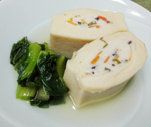

高野豆腐の射込み煮
- （一人当たり）
- カロリー：165kcal
- たんぱく質：13.7g
- 脂質：5.6g
- 炭水化物：12.3g
- 塩分：2.6g


＜2人分＞
- 高野豆腐
- 2枚
- ・えび
- 40g
- ・長芋
- 大さじ1
- ・ニンジン
- 30g
- ・きくらげ（生）
- 1枚
- ・長ネギ
- 5cm
- ・塩
- 少々
（ひとつまみ）
A
- ・だし汁
- 400ml
- ・醤油
- 大さじ1
- ・みりん
- 大さじ2
- ・塩
- 少々
（ひとつまみ） - 小松菜
- 1株
B


- 高野豆腐は、70℃前後の湯にひたして10分くらい置くとふっくらする。
白い汁がでなくなるまで３～４回水をとりかえて押し洗いしてかたくしぼってから調理する。
1枚を半分に切る。半分に切った高野豆腐を立てて、包丁縦に入れ、袋状にする。 - ニンジン、きくらげは細切りにして、さっとゆでる。
長ネギは小口切りにする。長芋はすりおろす。 - エビのすり身に②を加えてよく混ぜ、塩を加えて粘りが出るまでさらに混ぜ、スプーンで①の高野豆腐にすり身を入れる。
- Bの材料を鍋にいれ、沸騰したら高野豆腐を加えて10分位煮る。
- 火を止める前に、5㎝幅に切った小松菜を加え、サッと火を通したら火を止め完成。
高野豆腐の射込み煮
昔から今もなお使われつづけ、親しまれている乾物は、日本の食生活にはなくてはならないものです。乾物の味は、保存の仕方やもどし方によって決まってきます。昔ながらのお惣菜から新しい味まで発見を試みたいものですね。
今回のような含め煮は安定のおいしさですが、パン粉をつけてフライにしても喜ばれます。大いに乾物を利用して、バラエティな食卓をお楽しみください。